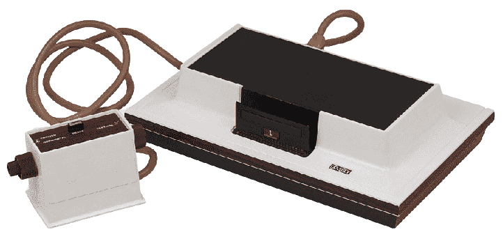
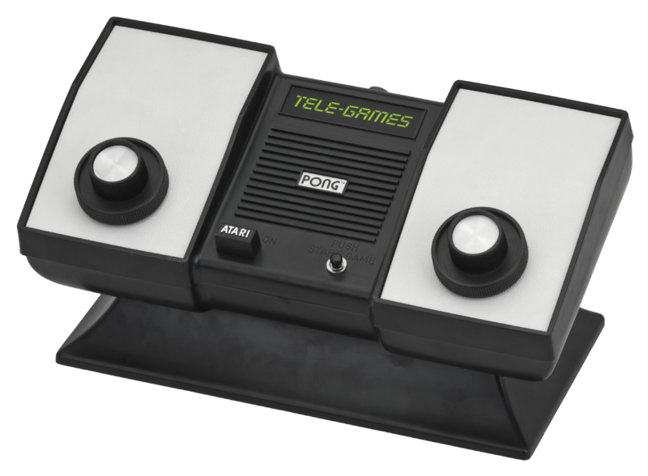
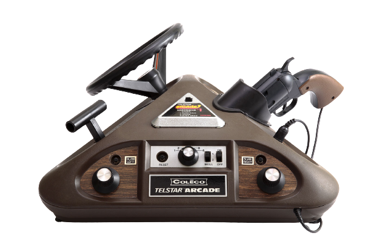
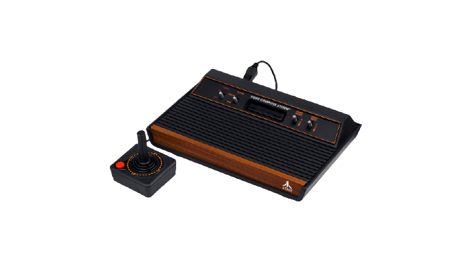
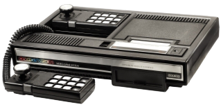

INICIO DE UM SONHO
Você conhece a historia dos games? Não? Não se preocupe nós da CHAMBER´S vamos te contar, então
vem com a gente conferir

Magnavox Odyssey
O Magnavox Odyssey foi simplesmente o primeiro videogame do mundo!
Seu lançamento foi
no
ano de
1972, ou seja,
há bastante tempo, não é mesmo?
Embora ele tenha sido o primeiro
console do
mercado de games, seu sucesso é algo incontestável
e, um dos principais motivos era a
possibilidade dele ser integrado ao aparelho de televisão.
Logicamente, por conta da época, suas limitações eram evidentes.
Afinal, ele não era
capaz
de
reproduzir sons e somente era compatível com alguns tamanho de TV.
Além disso, a
biblioteca
de
jogos era outra questão, visto que somente 27 títulos foram lançados no período.
Home Pong
Três anos após o lançamento do Odyssey, a Atari lançou no mercado Pong,
um console que
trazia em sua memória o jogo de arcade.
O console era constituído de dois botões que
controlavam as barras durante as partidas.
O console ajudou a popularizar o nome da
Atari no mundo dos games,
apesar de ser o estopim de um processo movido pelos criadores
do Odyssey,
já que a empresa utilizou o game e a tecnologia sem a autorização da
Magnavox.


Telstar
Aproveitando a popularidade de jogos como Pong,
a Coleco lançou uma linha de consoles
que
durou dois anos,
mas que rendeu à empresa 14 videogames diferentes.
Chamada de
“Linha
Telstar”, cada console vinha com um design distinto e jogos próprios,
devido a falta de
capacidade de rodar vários games.
Atari 2600
O Atari 2600, lançado em 77, revolucionou o mundo dos games
pelo simples fato de
introduzir cartuchos com diferentes jogos ao seu console.
Agora, os jogadores não
estavam presos aos mesmos games embutidos na memória dos videogames, criando uma indústria
de produtoras e venda de cartuchos com o seu lançamento.
O Atari 2600 é considerado por
muitos como o grande responsável pela quebra da indústria de videogames nos anos 80.
A
indústria se recuperou apenas no final da década, com o lançamento do NES.


Colecovision
Após alguns anos de hegemonia do Atari 2600, a Coleco resolveu encarar o mercado de games
mais uma vez com o Colecovision. Lançado com aproximadamente 12 jogos, o console tinha como
vantagem a capacidade de reproduzir quase que totalmente a experiência gráfica dos arcades
no conforto da sua sala de estar.
Eai gostou de ver os primeiros videogames que surgiram?
Conta ai, você assim como nós da Chamber´s curte um game?
Esperamos que tenha gostado, aproveita e Cadastre-se já para fica por dentro de tudo que acontece no mundo dos games, prometo, não vamos te decepcionar.